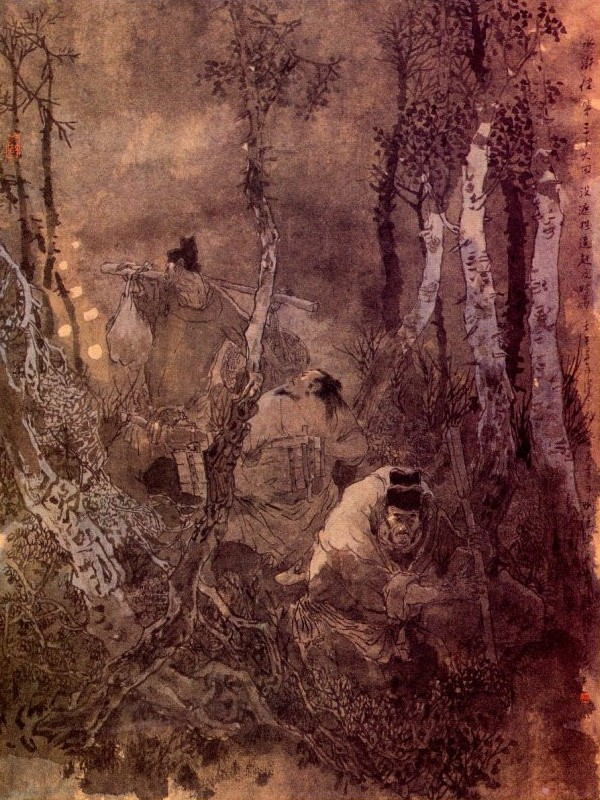
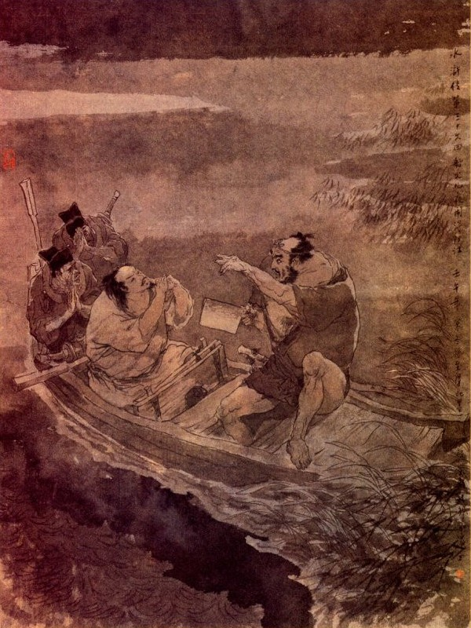
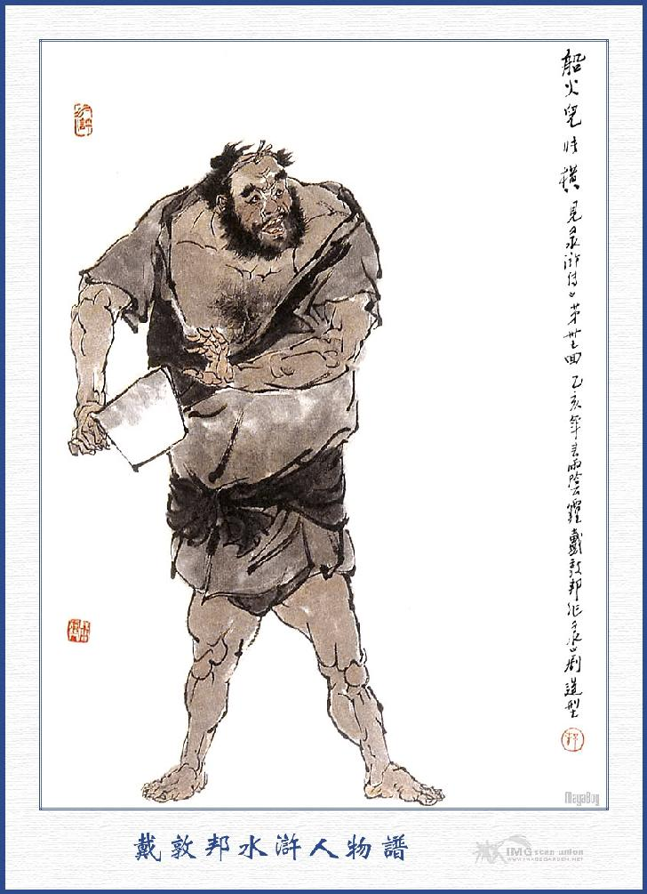
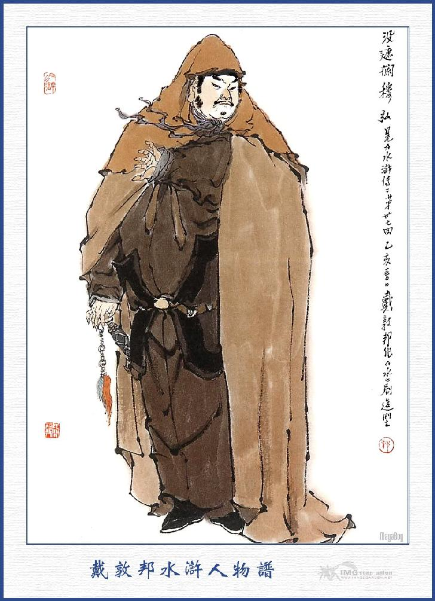

Bấy giờ đại hán kia mắng Tống Giang rồi giơ tay toan đánh, Tống Giang liền đáp lại rằng:
- Tôi có tiền thì tôi cho người ta, việc gì đến anh mà.
Đại hán kia nghe nói tức giận, vội nắm lấy tay Tống Giang mà quát lên rằng:
- Thằng ăn cướp bị tù này còn dám đối lại với ta a?
Tống Giang ung dung đáp rằng:
- Can chi mà không dám nói lại?
Đại hán kia hăng máu, liền giơ quyền đánh vào mặt Tống Giang. Tống Giang né mình tránh về một bên. Đại hán kia lại xông vào, Tống Giang thấy vậy lại toan dùng sức để chống cự, chợt đâu thấy anh chàng bán thuốc cao đã đẩy rẽ đám người đứng đông mà sấn vào đằng sau, một tay nắm lấy khăn đại hán kia và một tay nắm giữa thắt lưng, đẩy một cái thực mạnh đại hán ta ngã quay lơ xuống đất. Đại hán bị ngã, cố lóp ngóp bò dậy, lại bị anh chàng bán thuốc cao đá luôn cho cái nữa, lại ngã lăn xuống đó. Hai tên công sai thấy vậy thì túm lại giữ can anh chàng kia không cho đánh quá. Khi đó đại hán kia trở dậy được, bèn quay nhìn Tống Giang và anh chàng bán thuốc cao mà nói rằng:
- Được lắm! Giỏi lắm! Rồi chúng bay sẽ biết tay ta.
Nói xong cúi cổ chạy thẳng về phía Nam. Bấy giờ Tống Giang hỏi người bán thuốc cao rằng:
- Chẳng hay quý tánh cao danh là gì, ngài quý quân ở đâu?
Người kia đáp:
- Tôi người ở huyện Lạc Dương, tỉnh Hà Nam. Tên là Tiết Vĩnh, ông tôi ngày trước làm thuộc viên cho quan Kinh Lược Trung, sau vì ác cảm với một số đông liêu nên không được thăng dụng nữa. Đến đời tôi chỉ nhờ nghề đánh gậy bán thuốc cao để kiếm ăn, đám giang hồ thường gọi tên là Bệnh Đại Trùng (con cọp ốm) Tiết Vĩnh. Vậy chẳng hay quý tinh danh là gì?
- Tôi đây họ Tống tên Giang, người ở huyện Vận Thành.
Tiết Vĩnh hỏi luôn rằng:
- Có phải ngài lá Sơn Đông Cập Thời Vũ Tống Công Minh không?
- Vâng, chính là tôi đó.
Tiết Vĩnh nghe dứt lời thì cúi ngay xuống mà chào Tống Giang. Tống Giang vội đỡ dậy mà bảo rằng:
- Ta tìm chỗ nào uống vài chén rượu nói chuyện cho vui, ngài nghĩ sao?
Tiết Vĩnh đáp:
- Xin vâng. Chúng tôi đương muốn được gặp tôn nhan, thực là trời xui khiến vậy.
Nói đoạn lập tức thu thậïp các đồ hàng hóa rồi cùng Tống Giang đi vào hàng rượu ở gần đó. Khi vào tới nơi chủ hàng bảo hai người rằng:
- Nhà tôi có rượu có thịt, song không bán cho các ông được.
Tống Giang hỏi:
- Làm sao lại không bán cho chúng tôi?
Chủ hàng đáp:
- Vừa rồi các bác đánh nhau với một ông đại hán là một ông trùm ở đất Yết Dương đấy, ông ta đã dặn nếu bán hàng cho bọn bác là ông ta phá hàng ngay. thế thì còn ai dám bán nữa.
Tống Giang nói:
- Nếu vậy thì ta đi ngay cho rảnh, nếu không thì hắn tất đến đây lôi thôi lại thêm khó chịu.
Tiết Vĩnh nói:
- Tôi xin về tính trả tiền trọ rồi một vài hôm cũng đến Giang Châu, vậy xin bác cứ đi trước cho.
Tống Giang liền lấy mười lạng bạc đưa cho Tiết Vĩnh rồi từ giã ra đi.
Khi Tiết Vĩnh đi rồi Tống Giang cùng hại tên công sai lại tìm đến mấy hàng rượu khác, đều bị chủ hàng từ chối như trước, không hề bán cho chút gì để ăn uống cả. Ba người tức giận đi mãi đến một tiệm hàng con con ở chỗ chợ, định vào đây để trọ, bất đồ cũng bị chủ hàng từ chối mà không nhận chứa.

Tống Giang biết thế không ăn thua, đành phải bảo nhau kéo đi cho rảnh. Vừa đi ra được một lúc thì bóng khuất non tây trời đã gần tối. Tống Giang cùng hai tên công sai trông trước trông sau không có hàng nước nào ở gần đó, trong bụng lấy làm lo ngại cùng bàn với nhau không biết vào đâu mà trọ được. Chợt đâu trông thấy ở quãng rừng xa xa có bóng đèn lấp ló. Tống Giang liền bảo với hai tên công sai rằng:
- Chỗ kia có ánh đèn sáng tất là có người ở đó, vậy ta đến đấy nói khó với người ta ở trọ một đêm rồi sáng mai sẽ cùng đi sớm.
Hai tên công sai đáp rằng:
- Chỗ đèn sáng hình như không thẳng đường cái đi đến thì làm thế nào cho tiện?
Tống Giang nói:
- Bây giờ lỡ bước phải chịu khó một tí, sáng mai đi rồi ra vài dặm đường cũng được chứ sao?
Nói đoạn ba người cùng rẽ xuống con đường nhỏ đi được hai ba dặm đường thì đến nơi một trang viện lớn ở đằng sau một đám rừng cây. Tống Giang cùng hai tên công sai lần vào cổng trang, gõ cửa mấy tiếng thì có người chạy ra mở cửa mà hỏi rằng:
- Các bác là người ở đâu mà đêm hôm đến gọi cửa làm vậy?
Tống Giang cung kính đáp rằng:
- Chúng tôi là người phạm tội, đày sang ở Giang Châu, qua đây lỡ mất độ đường, xin vào quý trang trọ nhờ một tối rồi sáng mai nộp trả tiền phòng.
Người kia đáp rằng:
- Các ông hãy đợi đây để tôi vào hỏi chủ nhân đã.
Nói đoạn quay trở vào một lát rồi lại trở ra bảo với ba người rằng:
- Thái Công mời các ông cứ vào.
Tống Giang cùng hai tên công sai đi vào đến trước thảo đường, vái chào trang chủ và nói chuyện lỡ đường xin nghỉ trọ một đêm. Thái Công nghe nói, liền gọi trang khách dọn phòng cho ba người nghỉ và lấy cơm nước cho ba người ăn uống. Trang khách vâng lời, dẫn ba người xuống một gian phòng, đốt cây đèn lên cho ba người ngồi nghỉ rồi dọn cơm nước lên mời ăn uống. Khi ba người ăn uống xong, trang khách lại thu dọn tất cả đem đi.
Bấy giờ hai tên công sai bảo với Tống Giang rằng:
- Bây giờ đêm hôm vắng vẻ, tôi hãy tháo gông cho Áp Ty dễ ngủ, để sáng mai cho kịp dậy sớm.
Nói đoạn liền tháo gông cho Tống Giang rồi cùng nhau ra ngoài phòng đi rửa, khi ra tới ngoài, ngửa trông lên thấy trời im sao sáng, cảnh vật như tờ, lại trông ra đằng mạn sau nhà, trong chỉ còn một ngõ hẹp con con, đi ngang qua đó. Ba người cùng đi rửa xong rồi trở vào đóng cửa phòng đi ngủ. Tống Giang nói với hai tên công sai rằng:
- Quý hóa quá! Nay nếu không có cụ trang chủ tử tế mà cho chúng mình trọ ở đây thì thực là nguy hiểm không chơi.
Đương khi nói chuyện thì bỗng thấy phía ngoài có tiếng người qua lại rồi thấy đóm đuốc sáng rực cả lên. Tống Giang dòm ra khe cửa nom thấy Thái Công dẫn hai người trang khách cầm đuốc đi soi khắp nơi. Liền quay vào bảo với hai tên công sai rằng:
- Trang chủ ở đây; cũng không khác gì phụ thân tôi, bao nhiêu công việc, đều phải tự mình soi xét lấy, chiều tối ban sáng, không hề bỏ chút việc nào thực là quý hóa.
Vừa nói đến đó thì lại thấy tiếng người gọi cửa ồn ào, có một tên trang khách ra mở cổng rồi thấy một bọn năm bảy người đi vào. Trong đó có một người cầm thanh đao lớn đi trước, còn mấy người vác gậy đi theo. Tống Giang nom kỹ, té ra anh chàng cầm đao, chính là người định đánh nhau với mình ở trấn Yết Dương lúc sớm. Bấy giờ nghe thấy Thái Công hỏi người kia rằng:
- Tiểu Lang đi đâu về đấy? Đánh nhau với ai mà bây giờ còn vác dao váv gậy như thế?
Anh chàng kia đáp rằng:
- Việc này Gia Gia không biết, Ca Ca tôi có nhà không?
Trang chủ đáp rằng:
- Ca Ca uống rượu say, nằm ở hiên sau kia.
Anh chàng lại nói:
- Vậy tôi phải gọi Ca Ca dậy, để bắt đám này mới được!
Thái Công hỏi:
- Ngươi lại cãi nhau với ai mà gọi Ca Ca dậy. Nó dậy thì lôi thôi sinh sự chứ không chơi. Người hãy nói cho ta biết vì duyên cớ gì đã.
- Dám thưa Gia Gia: Ngày hôm nay có một anh bán thuốc cao, đến ở trấn Yết Dương mà không vào chào anh em tôi, nên thế chúng tôi ngăn bảo các người trên trấn không ai được cho nó một đồng tiền nào. Dè đâu có một thằng tù tội ở phương nào mới đến làm bộ ra mặt hảo hán, đưa cho anh kia năm lạng bạc làm mất cả giá trị đất Yết Dương. Tôi tức mình toan đánh, lại bị anh hàng cao đá luôn mấy cái, đến giờ vẫn còn đau, căm tức không biết đâu mà kể. Tôi đã cho các người đi dặn các hàng rượu không được cho chúng nó ăn ngủ hôm nay và đã cho người đi lùng bắt được anh bán thuốc, đánh cho một trận nên thân, hiện còn để tạm ở nhà Đô Đầu rồi sáng mai sẽ trói nó lại mà lăn xuống sông cho nó mất tích. Còn hai thằng công sai với một thằng tù kia, không biết rằng nó đâu, tôi đương gọi Ca Ca lại để tìm bắt nó.
Thái Công gạt đi mà rằng:
- Con ơi! Chớ nên làm những việc tội ác như thế? Người ta có tiền thì người ta cho, việc gì đến mình mà lôi thôi sinh sự? Vả chăng nó đánh mình cũng chửa đau nào? Con đừng nên nói với Ca Ca rồi nó biết con bị đánh, nó lại lôi thôi giết hại người ta chứ không chơi. Con nghe lời ta đi vào buồng ngủ, đừng nên tìm Ca Ca nữa. Con cũng nên để lại một chút âm công mới được.
Anh chàng kia nghe nói mặc kệ, cứ phăm phăm vác đao đi vào hiên sau. Đoạn rồi Thái Công kia theo vào. Tống Giang nghe rõ ràng như vậy, bèn bàn với tên công sai rằng: - Nguy lắm rồi làm thế nào được đây? Ta vào đây chính là nhà nó rồi, phải tháo chạy cho mau, không thì chêùt cả bây giờ. Dẫu cho ông lão ấy không nói ra, song đám người nhà đứa nào dám giấu. Hai anh công sai cũng hoảng hốt mà rằng:
- Nếu vậy ta phải mau đi mới được.
Tống Giang nói:
- Ta không nên đi lối cửa trước, phải khoét một lối vách mà đi lối sau mới xong.
Nói đoạn hai tên công sai đều vác hành lý, Tống Giang cầm lấy gông rồi khoét một quãng vách mà ra lối sau. Ba người dắt nhau, liền theo dưới bóng sáng mà đi vào con đường nhỏ trong đám rừng cây, không còn biết đến đất trời đâu hết thảy?
Đi đến một trống canh, đã đến bến sông Tầm Dương hai bên toàn là lau lách đìu hiu, ở giữa một giải trường giang trắng xóa, đằng sau lại nghe tiếng người kêu đuổi đến nơi, đèn đóm đi theo chẳng khác gì bọn người đi đánh cướp: Tống Giang thấy vậy thì trong bụng nửa cảm thương lo sợ, kêu xin trời phật cứu cho rồi cùng nhau nấp vào lau lách. Được một lát thấy đóm đuốc đi theo đã gần tới đằng sau, bước người càng lấy làm hãi hùng kinh sợ, trông ra nước cuốn sông ngăn, đất hết trời cùng không còn lối nào mà chạy thoát được.
Tống Giang ngửa mặt lên trời mà than rằng:
- Nếu biết cơ hội này, thà rằng ở Lương Sơn cho rảnh chuyện. Ai ngờ tính mạng mà chôn lấp ở chốn này, thực là uổng quá.
Ngậm ngùi thay bến Tầm Dương,
Đìu hiu gió lạnh, mênh mang sóng cồn.
Ai về nhắn bạn Lương Sơn,
Tầm Dương nào phải đất chôn anh hùng.
Đương khi nguy cấp kinh hoàng thì bỗng đâu trong đám ngàn lau bụi lách, có tiếng kẽo kẹt quai chèo rồi có một con thuyền ở đâu chở đến. Tống Giang thấy vậy, vội gọi người lái đò mà nói lên rằng:
- Bác lái ơi! Bác làm phúc đức cứu ba chúng tôi, tôi sẽ trả bác nhiều tiền.
Người lái đứng trên thuyền nói rằng:
- Ba các bác là ai đi đâu bây giờ?
Tống Giang nói:
- Đằng sau có giặc đuổi, chúng tôi lạc bước đến đây, bác làm phúc cứu giúp, chúng tôi xin trả nhiều tiền lên.
Lái đò nghe nói, liền ghé thuyền vào, cho ba người bước lên, một anh công sai khăn gói bỏ vào trong khoang, còn một anh lấy gậy mà đẩy thuyền ra. Tên lái đò vừa bắt chèo lên để chèo, vừa lắng nghe thấy đồ hành lý để trong khoang thuyền có tiếng xủng xoẳng thì trong bụng hớn hở mừng thầm mà hết sức cho thuyền ra giữa dòng sông. Bấy giờ bọn người đuổi theo đã đi gần tới bên cạnh bến sông, có hai đại hán tay cầm thanh đao đi trước và hơn mươi người cầm gậy giáo theo sau, đốt mười mấy bó đuốc Sở rực góc trời, kéo ùa đến đó. Khi bọn ấy đi tới bờ sông, liền gọi lái đò bảo cho thuyền vào bến. Tống Giang cùng hai người công sai nấp vào một xó ở trong khoang, bảo với bác lái đò rằng:
- Bác đừng chở vào bến rồi chúng tôi xin đãi tiền bác.
Anh lái đò gật đầu rồi lẳng lặng mà kẽo kẹt chèo thuyền đi thẳng; mặc cho bọn trên bờ kêu gọi luôn mồm. Đám ở trên bờ thấy vậy quát lên rằng:
- Bớ lái đò kia không chở thuyền vào đây, ông cho là chết cả bây giờ.
Anh lái đò cười nhạt mấy tiếng rồi cứ im lặng không trả lời sao cả. Trên bờ lại quát lên rằng:
- Bớ lái đò! Anh là người ở đâu, dám to gan không chở vào đây?
Lái đò cười nhạt đáp rằng:
- Lão gia là anh lái đò họ Trương đây, anh đừng lòe lão gia nữa.
Bấy giờ một đại hán ở trên bờ nói luôn lên rằng:
- Có phải Trương Đại Ca đấy à? Anh có trông thấy anh em tôi đây không?
Lái đò đáp:
- Ta có mù chột gì mà không nom thấy.
Đại hán lại nói:
- Nếu vậy anh hãy chở thuyền vào đây, tôi nói câu này đã.
- Có chuyện gì anh hãy để mai, thuyền bây giờ còn phải đi có việc vội.
- Anh em tôi chỉ muốn bắt ba người ở trong thuyền đó thôi.
- Ba người trong thuyền đều là cha mẹ nuôi nấng thân quyến nhà tôi, tôi mời đi xơi miếng dao phay đây.
- Anh hãy cứ chở vào đây chúng tôi nói câu này đã.
- Chịu thôi, cơm áo của tôi, bây giờ lại đem cho bác sung sướng hay sao?
Đại hán kia nghe vậy thì nóng nảy mà rằng:
- Trương Đại Ca ơi! Chúng tôi không cần gì chuyện ấy đâu, bác cứ chở vào đây, cho tôi bắt mấy thằng tù kia thôi.
Lái đò cứ mần thinh, vừa chèo thuyền đi, vừa nói rằng:
- Ngày hôm nay mới tiếp được một việc, chả lẽ mang vào đấy cho anh phỗng mất hay sao? Thôi, hai anh tha lỗi cho, để hôm sau sẽ nói chuyện.
Tống Giang nghe thấy lái đò đối đáp như vậy cũng không hiểu thâm ý sao, chỉ tắc lưỡi bàn với hai tên công sai mà khen rằng:
- Bác lái đò phúc đức quá, thực hết lòng cứu giúp chúng ta. Chúng ta không nên quên ơn những người như thế. Thực là trời đưa chiếc thuyền để cứu ta đó.
Bấy giờ thuyền đi đã xa, bọn trên bờ kia vẫn chịu phép cầm đuốc đứng vơ vẩn trên đám bờ lau mà không làm gì được. Tống Giang thấy vậy liền lẩm bẩm bảo hai người kia rằng:
- Hú vía! Phen này thực là xa kẻ ác, gặp được người hay, không còn sợ hoạn nạn chi nữa!
Chàng đương nói chuyện thì thấy anh lái ngoài kia vừa kẽo kẹt tay chèo, vừa cất tiếng véo von hát lên rằng:
"Lão đây sinh trưởng ở ven sông,
Chẳng thích giao du chỉ thích đồng.
Có phải đêm qua trời báo mộng,
Hôm nay được của rõ như không".
Tống Giang cùng hai tên công sai nghe thấy câu hát như vậy thì kinh ngạc không hiểu ra sao? Tống Giang suy tưởng trong bụng:
- Chẳng hay họ hát chơi như vậy? Cũng không lấy gì làm quan hệ!
Ba người đương nửa sợ nửa mừng, chưa hiểu ra sao thì ngoài kia chú lái đò đã gác chèo lên mà nói rằng:
- Thằng tù với hai thằng công sai kia binh nhật mày quen làm hại những kẻ ăn sương, ngày nay gặp tay lão gia đây, chúng bây thích ăn miếng đao phay, hay là muốn ăn bánh hỗn độn chăng.
Tống Giang nghe nói đáp lên rằng:
- Quan bác đừng nói bông làm gì thế. Thế nào là miếng dao phay, thế nào là bánh hỗn độn?
Anh lái đò trợn mắt ghê gớm lên mà nói rằng:
- Lão gia đùa gì với bây! Bây muốn ăn miếng dao phay thì lão gia có một con dao sắc như nước, ở dưới gầm thuyền kia, không cần phải bốn nhát năm nhát gì cả, chỉ mỗi người một nhát rồi vứt xuống nước là xong. Bằng thích đánh hỗn độn thì cởi mau quần áo trần truồng mà nhảy xuống sông mà tự tử.
Tống Giang nghe nói níu lấy hai người công sai mà kêu rằng:
- Khổ lắm trời ơi! Thực là phúc bất trùng lai, họa cô đơn chí!
Lái đò lại quát lên rằng:
- Ba đứa bàn định mau mau, thế nào nói đi.
Tống Giang nói rằng:
- Bác lái ơi! Xin bác xét cho. Chúng tôi có gì đâu. Chúng tôi là kẻ phạm tội, đày sang đất Giang Châu, bình sinh khổ sở, xin bác thương mà tha thứ cho
Lái đò gắt lên rằng:
- Bây nói gì thế? Tha cho ba chúng bây à? Ta, gọi là nửa đứa cũng không tha, ông đây tên là Câu Kiển Trương Gia Gia (ông cụ Trương mặt chó) đây, bố cũng không cần, mẹ cũng không cần, bây câm mồm đi, nhảy xuống nước đi thôi.
Tống Giang vật nài kêu rằng:
- Chúng tôi xin đưa hết các đồ kim ngân cùng áo xống trong gói để dâng ông, xin ông làm phúc tha mạng cho chúng tôi.
Lái đò lặng ngắt, đi vào dưới khoang thuyền, lấy con dao sáng nhoáng lên rồi quát bảo với ba người rằng:
- Ba chúng bây muốn làm thế nào?
Tống Giang thấy vậy thì ngửa mặt lên trời thở dài và bảo hai tên công sai rằng:
- Chỉ vì tôi không kính trời đất, bất hiếu với cha mạ làm nên tội ác thế này, để liên lụy đến hai bác, thực là đau xót quá chừng!
Hai tên công sai cũng níu lấy gươm mà nói rằng:
- Áp Ty ơi! Thôi còn nói làm chi nữa! Ba chúng tôi cùng chết với nhau một chỗ này thôi!
Anh lái đò sốt ruột quát lên rằng:
- Ba anh cởi áo mau mau nhảy xuống sông, nếu không thì lão gia cho mỗi anh một nhát.

Tống Giang cùng hai tên công sai, nghe nói thì ôm nhau mà quay ra trông xuống dòng sông để nhảy. Chợt đâu trên sông có tiếng kẽo ca kẽo kẹt rồi có một chiếc thuyền vun vút đi đến. Trên thuyền có ba người một đại hán cầm cây gậy móc, đứng ở mũi thuyền và hai người lái chèo ở đằng sau. Khi thuyền gần đến nơi thì đại hán cầm gậy móc kia mà quát lên rằng:
- Thuyền nào dám hành sự ở đây? Hàng hóa trong thuyền đã có chủ, sao các ngươi được làm liều như thế?
Anh lái đò nghe nói, liền ngẩng lên mà nói rằng:
- Tưởng là ai, té ra Lý Đại Ca đó. Đại Ca đi buôn bán gì mà không cho chúng tôi đi với?
- Bác Trương ơi! Bác vùng vẫy ở đây một mình. Trong thuyền có hàng hóa gì đấy? Khá không?
- Tôi nói chuyện cho bác buồn cười nhé: Tôi mấy ngày hôm nay nhẵn nhụi, không sờ vào đâu được rồi lại đánh bạc thua không còn một đồng một chữ nào; Đương ngồi buồn ở trên thuyền, bỗng có một đám người đuổi ba món hàng hóa xuống, té ra là hai anh lính, với một thằng tù đen đen lùn thấp, không biết rằng ở đâu đến? Tôi thấy nó nói là đi đày sang đất Giang Châu, nhưng mà không thấy đeo gông xích gì cả. Còn bọn đuổi ở trên bờ thì chính là hai anh em họ Mục, họ định đòi bắt đám này, nhưng tôi không chịu trả lại.
Đại hán kia nghe đến đó thì ra đáng kinh ngạc mà rằng:
- Chết rồi! Chẳng hay là Tống Công Minh Ca Ca của ta đó?
Tống Giang ngồi bên này nghe tiếng người kia hơi quen quen liền kêu lên rằng:
- Hảo hán nào bên ấy? Nhờ cứu cho Tống Giang tôi với.
Đại hán kia cả kinh nói rằng:
- Té ra Tống Ca Ca của ta thực đó à?
Tống Giang nghe nói vội nhẩy ra ngoài khoang, nhờ ánh sao soi sáng. Trông sang bên kia, thấy người đứng mũi thuyền chính là Hồn Giang Long Lý Tuấn và hai người chèo ở đằng sau chính là Đông Uy, Đồng Mãnh. Bấy giờ Lý Tuấn nhẩy sang bên thuyền này kêu lên rằng:
- Khổ hại cho Ca Ca tôi, nếu tiểu đệ chậm đến đây thì còn gì là tính mạng! Hôm nay cũng là trời kia xui khiến, tiểu đệ ngồi nhà sốt ruột không yên, nên mới chèo thuyền qua đây để kiếm mồi buôn bán, dè đâu lại gặp Ca Ca bị nạn kinh nguy như thế.
Anh lái đò nghe vậy thì ngây người lạnh ngắt, hồi lâu mới cất tiếng hỏi lên rằng:
- Lý Đại Ca ơi! Té ra người lùn đen đó, chính là Sơn Đông Cập Thời Vũ Tống Công Minh phải chăng?
Lý Tuấn nói rằng:
- Chính phải rồi, bây gờ anh mới biết khổ chưa? Chàng lái đò nghe nói vội cúi rạp xuống để lạy mà nói rằng:
- Chết nỗi! Làm sao nhân huynh không nói tên ngay từ trước, để tôi khỏi làm càn làm bậy như thế?
Tống Giang hỏi Lý Tuấn rằng:
- Hảo hán này là ai, xin bác cho tường tên họ?
Lý Tuấn đáp rằng:
- Dám thưa Ca Ca, người này nguyên anh em kết nghĩa với tôi, họ Trương tên Hoành, người Tiểu Cổ Sơn, biệt hiệu là Thuyền Hoả Nhi, vẫn chuyên nghề lẩn lút ở bến Tầm Dương xưa nay đó.
Nói đoạn liền bơi thuyền vào đến bến rồi buộc thuyền vào bến mà mời Tống Giang cùng hai tên công sai lên bờ. Lý Tuấn lại bảo với Trương Hoành rằng:
- Xưa nay tôi thường nói chuyện với anh: Nghĩa sĩ trong thiên hạ bây giờ, chỉ có một mình Sơn Đông Cập Thời Vũ Tống Áp Ty ở huyện Vận Thành ngày nay anh đã biết chưa?

TRƯƠNG HOÀNH
Trương Hoành bèn lấy đá lửa bật lên soi mặt Tống Giang một lượt rồi thụp xuống bến lạy lấy lạy để mà nói rằng:
- Xin Ca Ca tha tội cho chúng tôi. Dám hỏi Ca Ca cớ gì mà đi đày sang Giang Châu như vậy?
Lý Tuấn liền đỡ lời cho Tống Giang mà kể chuyện cho Trương Hoành nghe. Trương Hoành nghe nói có vẻ vui mừng mà rằng:
- Xin nói để Ca Ca biết: Tôi có hai anh em ruột, tôi đây là lớn, còn thằng em nữa, người trắng như ngà mà nghề chơi cũng thạo, nó có thể bơi lặn dưới nước được. Nó vừa trắng vừa giỏi, nên người ta thường gọi cho một tên lạ là Lãng Lý Bạch Điều Trương Thuận. Trước đây hai anh em tôi thường ở Dương Tử Giang kiếm ăn với nhau, thực là lắm chuyện buồn cười. Tống Giang nói:
- Thế nào cho tôi nghe nốt?
Trương Hoành tiếp luôn rằng:
- Hồi đó hễ khi nào anh em tôi thua bạc thì tôi lại đánh một con thuyền ra một quãng nào xa vắng để chở khách sang ngang. Chờ khi khách bộ hành xuống đã đông rồi em tôi ăn mặc giả làm khách đáp mà xuống ngồi ở dưới thuyền. Tôi chèo thuyền ra đến giữa sông rồi gác chèo lên, bỏ neo xuống, tay cầm một con dao bầu đi hỏi tiền đò. Cứ lý ra mỗi người phải trả có năm trăm đồng, song tôi nhất định cứ mỗi người phải trả ba quan mới được. Trước hết tôi hãy hỏi em tôi là Trương Thuận, Trương Thuận giả vờ làm mặt không có tiền, tôi liền một tay nắm đầu, một tay xách khố mà quăng xuống sông rồi quay ra đòi tiền hành khách. Hành khách trông vậy thì anh nào anh ấy khiếp vía kính sợ bảo nhau góp tiền trả đủ ba quan không dám thiếu nửa đồng nào. Khi thu đủ tiền, tôi liền cho bọn kia vào bờ rồi bấy giờ em tôi ở dưới đáy sông bò lên, chia tiền mà đi đánh bạc với nhau. Ấy, cách sinh nhai như thế, nhân huynh tưởng có nhiêu khê không?
Nói đoạn lại tiếp luôn rằng:
- Hiện nay thì đã cải nghiệp cả rồi, tôi thì ở lại bến Tầm Dương này để kiếm chác quanh co, còn em tôi là Trương Thuận thì bây giờ lại sang đánh cá ở đất Giang Châu, nay mai Ca Ca sang đó, tôi xin gửi bức gia thư nhân thể. Nhưng mà tôi không biết chữ thì viết thế nào được?
Lý Tuấn nói:
- Chúng ta đi vào trong xóm, nhờ thầy đồ biết chữ viết cho.
Nói xong liền để Đồng Uy, Đồng Mãnh lại coi thuyền rồi Trương Hoành cùng Lý Tuấn, cầm đèn dẫn Tống Giang cùng hai người công sai đi vào trong thôn. Đi được nửa dặm đường thì thấy phía trước mặt có bọn người đim và có đèn đuốc sáng trưng. Trương Hoành liền hỏi to lên rằng:
- Anh em bác chưa về hay sao?
Lý Tuấn thấy vậy hỏi Trương Hoành rằng:
- Anh em nhà nào thế?
Trương Hoành đáp:
- Đó là hai anh em nhà họ Mục đấy.
Tống Giang vội gạt đi mà rằng:
- Không được! Không được! Hai anh em ấy họ đương định bắt tôi đấy.
Lý Tuấn nói:
- Không ngại chi, họ cũng như chúng tôi, chỉ vì họ chưa biết Ca Ca đấy thôi.
Nói đoạn giơ tay lên vẫy và thổi một tiếng còi để gọi bọn kia. Hai anh em nhà kia nghe tiếng còi gọi, bèn dẫn người nhà đi tới nơi, thấy Lý Tuấn và Trương Hoành đương cung kính chuyện trò với anh tù mà chính mình đương đi lùng bắt thì lấy làm ngạc nhiên mà hỏi rằng:
- Sao hai Đại Ca lại quen mấy người này?
Lý Tuấn cả cười mà hỏi lại rằng:
- Các bác bảo người này là ai?
Hai anh em nhà kia đáp rằng:
- Nào chúng tôi có biết là ai. Sáng hôm nay ông ta đem tiền cho thằng bán thuốc cao làm mất cả danh giá đất Yết Dương, tôi đương tìm bắt đây.
Lý Tuấn cười rằng:
- Đây chính là Sơn Đông Cập Thời Vũ Tống Công Minh làm Áp Ty ở Vận Thành, chúng ta vẫn nói chuyện đến luôn đấy. Các anh lạy chào đi thôi.
Hai anh em nhà kia vội vàng vất đao ra rồi cúi lạy Tống Giang mà nói rằng:
- Chúng tôi nghe tiếng đã lâu mà không được thừa tiếp bao giờ? Nay chẳng may xúc phạm tôn nhan, xin Ca Ca tha tội cho.
Tống Giang đỡ hai người dậy mà hỏi rằng:
- Xin hai ngài biết quý tính danh là gì?
Lý Tuấn đáp rằng:
- Hai người này đều là con nhà hộ, anh là Một Già Lan Mục Hoằng, em là Tiểu Già Lan Mục Xuân, là một tay bá ở đất Yết Dương tôi đấy: Nguyên đất Yết Dương tôi có ba tay làm Bá miền núi Yết Dương: Hai là hai anh em nhà bác này làm Bá ở trấn Tầm Dương; Còn thứ ba là anh em Trương Hoành ở bến Tầm Dương, thế gọi là Tam Bá.
Tống Giang nói rằng:
- Nếu vậy thì các Bá tụ tập ở đây, thực là hạnh phúc cho Tống Giang lắm, vậy xin các Bá nghĩ tình phận anh em mà tha Tiết Vĩnh ra cho.
Mục Hoằng cười rằng:
- Có phải anh hàng thuốc cao đấy không? Nhân huynh cứ phóng tâm, tôi bảo Mục Xuân đem về nộp trả Ca Ca. Bây giờ hãy xin đón Ca Ca về tệ trang nghỉ chân một lúc đã.
Lý khen phải, liền bảo tên người nhà ra coi thuyền cho Đồng Uy, Đồng Mãnh và nhất diện sai người về trang báo trước ở nhà để giết dê lợn làm cơm thiết đãi rồi cùng nhau kéo thẳng về trang. Vừa đến canh năm, đi tới gia trang, Mục Thái Công ra đón vào thảo đường, mời Tống Giang cùng ngồi đối tọa, còn các người kia theo thứ tự mà ngồi. Khi tới gần sáng, đã thấy Mục Xuân dẫn Đại Bệnh Trùng Tiết Vĩnh về đó, Mục Hoằng liền giục đem tửu tịch lên đãi Tống Giang cùng các người rồi lưu lại một đêm ở đấy.
Sáng hôm sau, Tống Giang định sắp sửa ra đi, Mục Hoằng nhất định không nghe, cố lưu lại mà đưa Tống Giang đi xem xét khắp trong thị trấn Yết Dương. Tống Giang ở luôn ba ngày, sau sợ trễ quá kỳ hẹn, bèn quyết ý từ tạ xin đi. Anh em Mục Hoằng cố lưu không được bèn bày tiệc tiễn hành để sáng hôm sau tiễn chân Tống Giang. Sáng hôm sau Tống Giang từ tạ Mục Thái Công cùng các tay hảo hán mà dặn Tiết Vĩnh hãy ở lại đó ít lâu rồi sau sẽ tương hội ở đất Giang Châu. Mục Hoằng cũng ân cần lưu giữ Tiết Vĩnh ở đó rồi đưa một ít kim ngân để tiễn Tống Giang. Bấy giờ Trương Hoành đã nhờ người viết được phong thư nhờ gửi Tống Giang đưa đến Giang Châu trao cho Trương Hoành. Tống Giang gói vào hành lý cẩn thận rồi tất cả mọi người đưa chân ra bến Tầm Dương. Mục Hoằng sai một chiếc thuyền, xếp các đồ hành lý xuống trước rồi đem rượu xuống thuyền để tiễn hành. Khi rượu tiễn đã tan, bọn Lý Tuấn, Trương Hoành, Mục Hoằng, Mục Xuân, Đồng Uy, cùng Đồng Mãnh đều sụt sùi bái biệt trở về. Còn Tống Giang cùng hai tên công sai thì giong thuyền thẳng nẻo Giang Châu.

MỤC HOẰNG
Con buồm gió thổi phất phơ,
Tầm Dương trước lại bây giờ Tầm Dương.
Cùng trong một ngọn trường giang,
Mà nay nước cuộn sóng cuồng đi đâu!
Khi tới bến Giang Châu, hai tên công sai lại đeo gông vào cho Tống Giang rồi thu lấy các đồ lý và đem công văn giải vào trong phủ.
Quan Phủ Giang Châu họ Xài tên Đắc Chương, con thứ chín của Thái Sư Xài Kinh ở đương triều, nhân thế những người ở Giang Châu thường gọi là Xài Cưu Tư Phủ. Người này vốn tính tham lam kiêu sa, vả chăng Giang Châu là nơi đất rộng tiền nhiều, nên Xài Thái Sư cho ra Tri Phủ ở đó, để tiện đường phung phí ăn chơi. Bấy giờ hai tên công sai giải Tống Giang vào trước nha. Tri Phủ trông thấy Tống Giang có vẻ lỗi lạc phi thường, liền hỏi ngay rằng:
- Làm sao trên đầu gông lại không có dấu niêm phong của châu phủ như thế?
Hai tên công sai kêu rằng:
- Chúng con đi đường bị mưa xuân thấm ướt, nát mất lúc nào không hay.
Tri Phủ nghe nói, liền truyền hai tên lính giải sang nhà lao.
Khi ra khỏi cổng phủ, Tống Giang liền mời tất cả mọi người vào một tửu điếm để thiết rượu và lấy ra năm lạng bạc đưa cho hai tên lính ở Giang Châu. Khi ăn uống xong tên lính Giang Châu đưa Tống Giang đến lao phòng, ra đến nơi nói lót với quản doanh, Sai Bát rồi giao Tống Giang vào đó mà trở về trong phủ đường. Đoạn rồi hai tên công sai trước cũng giao các đồ hành lý cho Tống Giang và hết lòng cảm tạ mà trở vào trong phủ lĩnh giấy tờ để trở về Tế Châu. Khi đó Tống Giang nhờ người mời Sai Bát đến, đưa tặng mười lạng bạc và nhờ đưa lên Quản Doanh mười lạng, còn các người theo hầu trong doanh và lính tráng, đều có tặng tiền trà nước hẳn hoi. Nhân thế mọi người đều có lòng vì nể Tống Giang.
Hồi lâu, chúng dẫn Tống Giang lên phong điểm danh rồi tháo bỏ gông trói vào chào Quản Doanh. Quản Doanh vè đã được tiền đút lót nên khi thấy Tống Giang lên, liền hỏi ngay rằng:
- Tên tù phạm mới đến là Tống Giang kia, ngươi đã biết theo như luật lệ của đức Thái Tổ Võ Đức Hoàng Đế tiên triều, phàm các người mới phạm tội, phải chịu một trăm roi ra oai, vậy tả hữu đâu kéo tên phạm ra đây.
Tống Giang kêu rằng:
- Chúng tôi đi đường chẳng may bị cảm chưa khỏi, vậy xin ngài cho khất ít lâu.
Quản Doanh đáp rằng:
- Ta trông mặt anh này có lẽ còn ốm thực; Nếu vậy hãy cho gửi đó ít lâu. Anh này trước đã làm Huyện lại xuất thân thì tất là thạo việc, nay ta cho xuống bàn giấy ở bản doanh để sao viết giấy má.
Nói rồi liền thảo giấy cho Tống Giang xuống làm ở phòng giấy. Tống Giang tạ ơn rồi xuống lao phòng, thu xếp hành lý để sang bên phòng giấy. Các bọn tù đồ thấy Tống Giang được biệt đãi như vậy thì bảo nhau mua rượu thịt đến mừng. Ngày hôm sau Tống Giang lại làm rượu thiết lại bọn tù đồ và thỉnh thoảng lại mời Sai Bát đến uống rượu, còn về chỗ Quản Doanh thì đưa đồ biếu tặng luôn luôn. Tống Giang nhờ được sẵn tiền trong túi, hết lòng cố kết bạn với bọn Giang Châu, nên mới đến đó được nửa tháng trời mà khắp trong dinh trại không ai là không vui thích yêu chiều.
Nhân tâm theo với hơi đồng
Thói đời nóng lạnh thôi không lạ gì?
Một hôm, Tống Giang đương ngồi uống rượu với Sai Bát ở trong phòng giấy. Sai Bát bảo với Tống Giang rằng:
- Hôm trước tôi đã nói chuyện với nhân huynh, nên đưa chút lễ vật gì cho Tiết Cấp coi ngục ở đây, đên nay ngó nửa tháng trời, sao hiền huynh chưa đưa cho ông ta. Nay mai ông ta đến đây, tất là lôi thôi khó chịu.
Tống Giang đáp rằng:
- Cái đó không cần. Sai Bát có tiêu tiền thì cứ hỏi Tống Giang này mà lấy, còn như Tiết Cấp thì một chữ cũng không cho. Để xuống đây khắc tôi có cách nói.
Sai Bát lại nói rằng:
- Chết nỗi! Áp Ty ơi! Tiết Cấp này không phải là vừa đâu, ông ta ngón gì cũng giỏi, nếu lỡ có điều gì xúc phạm thì nguy chứ không chơi, Áp Ty phải liệu mới được.
- Được, xin Huynh trưởng cứ phóng tâm, mặc kệ ông ta muốn thế nào, tôi cũng có cách. Dễ thường ông ta còn có việc cần đến tôi cũng chưa biết chừng.
Vừa nói xong thì thấy có một tên bài đầu đến báo rằng:
- Tiết Cấp đã đến, hiện đương quát lác ở trên sảnh, kêu rằng tên tù mới, sao không thấy đưa tiền lệ tiền ngạch gì cả.
Sai Bát liền bảo Tống Giang rằng:
- Đấy, tôi nói có sai đâu, bây giờ ông ta đến đây, không khéo lại liên lụy cả đến chúng tôi cũng nên.
Tống Giang đứng dậy cười mà rằng:
- Xin Sai Bát tha lỗi cho. Để hôm khác tôi xin hầu rượu, bây giờ đệ nói với ông ta xem sao đã.
Sai Bát cũng đứng dậy nói rằng:
- Xin hiền huynh đi một mình vậy, chúng tôi đến đấy không tiện.
Nói xong từ biệt mà đi. Đoạn rồi một mình Tống Giang đi đến phòng điểm danh để chào Tiết Cấp. Hay là:
Giang Châu chiếc nhạn ly quần
Cái khuôn con Tạo xoay vần từ đây
Mấy phen hồ hải tỉnh say
Con thuyền chìm nổi đến nay chưa cùng
Gió dồn giấc mộng Thanh Phong
Lương Sơn xa cách vẫy vùng riêng ai
Hãy liều nhắm mắt thử chơi
Xem rằng thế cục xoay đến đâu?
Lời bàn của Thánh Thán
Sách này tả 108 người, đều có tâm địa ngang tắt, thế nhưng chưa từng có ai Tống Giang con người giả dối không định đó vậy. Đối với hảo hán thiên hạ mà kết giao, mới đầu không để lồng lộng như thanh thiên, trong trắng như hao nguyệt, êm ái tựa mưa xuân, nóng thẳng như sấm hè. Chỉ có một điều tung tiền ra mà thôi. Xét ra lấy đồng tiền là gốc mua chuộc, thế mà tự nói rằng hiếu với cha mẹ, thế mà vẫn bảo rằng hiếu với cha mẹ, chẳng sợ thiên hạ không tin là hiếu với cha mẹ; Lại tự bảo rằng kính với trời đất, chẳng sợ thiên hạ không tin là kính trời đất; lại tự bảo rằng tôn triều đình, chẳng sợ thiên hạ không cho tin tôn triều đình; Lại tự bảo rằng mến bạn bè, không tin thiên hạ chăng cho là mến bạn bè. Hỡi ôi! Con người thiên hạ chỉ biết đồng tiền làm quý mà chẳng biết tới căn để sự tung tiền, đều làm cho Tống Giang dòm biết, vì đó tính chuyện, đều làm cho Tống Giang thao túng đổi ngầm thay rõ mọi sự, đó vốn là sự xấu xa của người trong thiên hạ. Cho nên Tống Giang vốn là anh lại sảo, chỉ đem đồng tiền mua chuộc thiên hạ mà vẫn tự xưng là Hiếu Nghĩa Hắc Tam, để tính ngầm ngôi của Tiều Cái về sau, đấy là việc xấu, sao nỡ như thế vậy vay! Tác giả vốn ghét thế gian có những con người như thế, mới mượn một Tống Giang, để lập chuyện ra mà từng chỗ chép ra sự phóng tài hóa thu tâm, đều là lấy ngòi bút công giết chết lòng tà gian vậy.
Thiên hạ bấy giờ, không ai chả thân với Tống Giang, thế mà rất thân như Hoa Vinh kia thấy rõ lắm. Hoa Vinh đón mời, Tống Giang không khi nào chẳng tới; Hoa Vinh lưu giữ, Tống Giang không khi nào chả ở; Hoa Vinh cần tháo gông, Tống Giang không khi nào chẳng tháo. Đương lúc trên vin cớ triều đình, dưới nghe lời cha dạy, dù có một trăm Hoa Vinh chẳng từng khuyên nổi Tống Giang tạm mở gông ra làm cho đám người sơn bạc tưởng thực rằng cái gông của Tống Giang phải đến lao thành Giang Châu thì mới dám cởi, tác giả ghét lắm, mới tả ở chỗ núi Yết Dương rằng hãy tạm mở gông, đến sau từ biệt ly, lại chép rằng: hãy đeo gông lại. Ở trong phòng Mục Thái Công chép rằng: trong này không ai người ngoài, hãy tạm tháo gông, Tống Giang nói rất phải hãy tạm tháo gông; đến khi chạy trốn lại chép rằng Tống Giang cầm lấy gông. Khi trong miệng Trương Hoành chép nói rằng: bấy giờ chẳng đeo gông; với lúc Mục Hoằng thuyền quay lại cũng chép rằng: Mọi người ở giang biên sửa soạn đeo gông. Đến khi lên bờ Giang Châu, chép rằng: Tống Giang liền đeo gông vào; Khi tới Quan Phủ hỏi: Sao trên gông không có chữ của châu quận đi qua. Tất cả những chỗ tả đến đeo gông như thế, để so với đoạn văn trên, Hoa Vinh cần bảo bỏ gông mà còn không được. Hỡi ôi! Than như Hoa Vinh mà còn chả tỏ chân tâm thì con người như gươm, còn ở với ai bền mãi!
Hồi này từng tiết ly kỳ, từng lần nguy hiểm, kỳ không dứt không thôi hiểm còn vương còn diễn, khiến độc giả hồi này, lửa lòng muốn tắt ánh mắt đâm mờ, chỉ lo đến chết, không mong còn sống, như vào trọ tửu điếm đã chả được, đó một lần; Tìm trú thôn trang, lại vào ngay trong nhà oan gia, đó hai lần; Khoét vách trốn đi, gặp sông ngăn nước trở, đó ba lần; Tìm được thuyền, giặc còn theo sát, đó bốn lần; Trong thuyền lại gặp Sảo Công định giết, đó năm lần; Sảo Công bức bách cầm đao đe dọa, đó sáu lần. Một hồi thấy thoát một miệng hùm, lại sa ngã một miệng hùm, khiến người một đầu đọc một đầu khiếp, chẳng những đọc không xiết mà khiếp cũng không xiết được.
Hồi này tả Tống Giang vốn tuân lời cha, chẳng chịu theo ở đám Lương Sơn, chợt đâu nảy ra tả một câu bất mãn với lời cha, một câu hối hận là chẳng ở lại Lương Sơn Bạc, đều do tác giả dùng bút ghê gớm, ngụ ý rất nghiêm cho lộ bản tướng con người giả dối.